Este manual describe, de forma completa y verificable, el sistema dMart UCI: qué es, qué problema resuelve, cómo está construido, cómo funciona cada uno de sus módulos, qué algoritmos utiliza, cómo se garantiza su seguridad y cómo se demuestra su calidad. Cada afirmación técnica refleja el estado real del repositorio y las capturas de pantalla corresponden al sistema ejecutándose con un dataset clínico de demostración a escala.
| Atributo | Valor |
|---|---|
| Nombre del producto | dMart UCI - Sistema de Gestión de Unidad de Cuidados Intensivos |
| Licencia | MIT |
| Lenguaje de programación | Rust 2024 (edición 1.98, rust-toolchain fijado) |
| Workspace | dmart-shared, dmart-server, dmart-app (WASM), dmart-server/fuzz |
| Base de datos | SurrealDB embebida (SurrealKV), migraciones versionadas SurrealQL |
| Líneas de código Rust | Aproximadamente 45.600 líneas en módulos de servidor, API, HL7, frontend y lógica compartida |
| Especificaciones (SDD) | 46 specs numeradas SPEC-001...SPEC-052 (todas completadas en 4 fases) |
| Interfaz | SPA (Leptos/WASM) con 17 rutas protegidas + PWA instalable y Web Push |
| Dataset de demostración | 520 pacientes, 74 camas, 160 equipos, 90 dispositivos, 69 usuarios |
| Puertos | HTTP 3000 (API y frontend); HL7/MLLP 2575 (configurable, opcional) |
dMart UCI es una plataforma clínica hospitalaria que unifica en un único binario compilado en Rust toda la operación de una Unidad de Cuidados Intensivos. El sistema fue diseñado para entornos exigentes y, en particular, para “red hospitalaria aislada sin acceso a internet”: no depende de servicios en la nube, todo el ciclo de vida del dato (ingesta, persistencia, cifrado, cómputo de escalas, inferencia de modelos, auditoría) ocurre dentro del hospital.
El frontend se compila a WebAssembly y se ejecuta en el navegador con el framework reactivo Leptos: la misma lógica de cómputo clínico (escalas, validaciones, modelos) está compartida entre el backend y el frontend desde un crate común (dmart-shared), lo que elimina la duplicación de lógica y los desajustes entre cómo se calcula un score en el servidor y cómo se muestra en pantalla.
El desarrollo siguió la metodología Spec-Driven Development (SDD): 46 especificaciones formales, cada una con tests de conformidad dedicados, cobertura medida y validación en el pipeline CI antes de cada entrega.
| Término | Definición |
|---|---|
| PHI | Protected Health Information: información de salud identificable del paciente (nombre, cédula, historia clínica, constantes). |
| UCI | Unidad de Cuidados Intensivos. |
| EWS | Early Warning Score: puntuación de alerta temprana que resume el riesgo de deterioro del paciente. |
| HL7 v2 / MLLP | Estándar de mensajería clínica (mensajes como ORU^R01) y el protocolo de capa inferior sobre TCP (Minimal Lower Layer Protocol). |
| FHIR R4 | Fast Healthcare Interoperability Resources, release 4: estándar de intercambio de recursos clínicos (Patient, Observation, Condition, DiagnosticReport, Bundle). |
| WORM | Write Once Read Many: también denominada auditoría inmutable o de una sola escritura. |
| RBAC | Role-Based Access Control: control de acceso basado en roles. |
| TOTP | Time-based One-Time Password (RFC 6238): segundo factor basado en tiempo (autenticadores tipo Google Authenticator). |
| JWT | JSON Web Token: token firmado que transporta la identidad y permisos de la sesión. |
| SSE | Server-Sent Events: canal HTTP unidireccional para streaming de eventos. |
| CDS | Clinical Decision Support: motor de reglas que asiste la decisión clínica. |
| LOS | Length Of Stay: predicción de días de estancia en UCI. |
| SDD | Spec-Driven Development: desarrollo guiado por especificaciones formales. |
| APS | Acute Physiology Score: subcomponente del APACHE II. |
Las Unidades de Cuidados Intensivos operan con pacientes en estado crítico cuyo deterioro puede producirse en minutos. La vigilancia clínica depende de datos complejos: constantes vitales provenientes de monitores de cama, escalas de gravedad estandarizadas, historial acumulado y guías de práctica. Sin una plataforma integrada, este trabajo se realiza con hojas de cálculo, papel y sistemas fragmentados que no conversan entre sí, lo que genera:
dMart UCI resuelve estas carencias con un único sistema autocontenido:
| Necesidad clínica | Solución de dMart UCI |
|---|---|
| Censo y expediente consolidado | Módulo de pacientes con ingresos, egresos, expediente longitudinal y búsqueda difusa instantánea. |
| Vigilancia continua | Streaming SSE en tiempo real por cama: cada nueva medición recalcula el EWS y notifica a las tarjetas del panel. |
| Escalas estandarizadas | APACHE II, GCS, NEWS2, SOFA y SAPS III en Rust con validación clínica por vectores de referencia. |
| Predicción de riesgo | Ensemble de ML (DecisionTree + regresión logística + gradient boosting) con calibración isotónica/Platt para mortalidad, y red neuronal MLP para estancia. |
| Interoperabilidad | Listener HL7 v2 sobre MLLP con drivers por fabricante (Mindray, Philips, genérico) y salida FHIR R4. |
| Seguridad y cumplimiento | PHI cifrada en reposo (AES-256-GCM), MFA TOTP, RBAC, auditoría WORM encadenada y evidencia normativa HIPAA/ISO 27001. |
| Funcionamiento sin internet | Todo el stack es local: servidor, base de datos embebida y PWA instalable en los terminales de enfermería. |
Spec-Driven Development (desarrollo guiado por especificaciones) es una metodología en la que cada requirerimiento funcional o no funcional del sistema se redacta primero como una especificación formal (“spec”) y solo después se implementa, se prueba y se valida contra esa especificación. A diferencia de un documento de requisitos pasivo, cada spec en este proyecto tiene una entidad de control: se exige un formato mínimo (objetivo, alcance, decisiones, criterios de aceptación, riesgos), se valida en CI (“Spec Lint / SDD Gate”) y no puede cerrarse sin los tests de conformidad y cobertura asociados.
La metodología garantiza que ninguna funcionalidad queda sin enunciar, que el código es trazable a un documento y que el estado de avance (specs aprobadas, tests verdes) es medible en todo momento.
1. Definición spec-XXX en `specs/` (formato validado por el SDD Gate) 2. Validación CI: `Validate spec format`, lint, revisión obligatoria 3. Implementación Código Rust/Leptos trazable a la spec 4. Tests cargo test -p dmart-server --lib --test api_tests 5. Cobertura cargo llvm-cov -p dmart-server --lib --test api_tests (gate >= 60 %) 6. Conformidad HL7/FHIR/scales con tests de conformance dedicados (SPEC-028, specs HL7) 7. Entrega imagenes multi-stage, Helm, GitOps (ArgoCD/Flux)
| Fase | Alcanzada | Entregables principales (specs) |
|---|---|---|
| 1 | SPEC-001 ... 008 | Fijar build WASM, modelo de datos, persistencia de modelos ML, integración HL7/MLLP, hardening de auth, observabilidad (Prometheus/Grafana), pipeline CI completo, alertas operativas. |
| 2 | SPEC-009 ... 038 | Backup/restore (DR), runbook, staging en Docker, ingesta FHIR, streaming EWS, timeline, motor CDS, registro de dispositivos, calidad de datos, escalamiento, tele-ICU, Helm/Kubernetes, GitOps, cluster SurrealDB, multi-tenancy, cobertura CI, vectores clínicos, huellas de scores, retención, hardening de ingesta, ML (ONNX/serving, similitud, LOS NN, feature store, ensemble de mortalidad). |
| 3 | SPEC-039 ... 043 | Producción: composición multi-stage, evidencia normativa, optimización de costos, despliegue canary/blue-green, mediciones operativas. |
| 4 | SPEC-044 ... 052 | Consola de soporte, versionado de API y gateway, feature flags, seguridad de cadena de suministro (cargo deny/audit, cosign, gitleaks), auditoría WORM, SLO/error budgets, UI operativas, Web Push con VAPID y mTLS para MLLP. |
server_ingest.rs documenta el endurecimiento de la ingesta (SPEC-031) y el listener HL7 está “fail-closed”: sin mTLS o handshake no arranca en despliegues declarados productivos.Este capítulo explica, para cada tecnología del sistema, qué es, cómo funciona por dentro y de qué manera concreta se aplica en dMart UCI.
Qué es: un lenguaje de programación de sistemas enfocado en rendimiento y seguridad de memoria. El compilador impide, en tiempo de compilación, los errores clásicos de C/C++ (use-after-free, carreras de datos, desbordamientos) mediante el sistema de propiedad y préstamos, sin necesidad de un recolector de basura.
Cómo se aplica: todo el backend (servidor HTTP Axum, parser HL7, cifrado, auditoría, ML) y toda la lógica compartida están escritos en Rust. El perfil de release usa opt-level="z", LTO y strip para minimizar el binario (un único ejecutable que aloja API + frontend estático + listener de monitores). Características de seguridad directas: tipos Zeroizing para secretos (borran la memoria al soltarse), comparación en tiempo constante con subtle, y ausencia de GC (latencias deterministas para la ingesta de monitores).
Qué es: un formato binario de bytecodes portátil que se ejecuta en una máquina virtual integrada en los navegadores. Permite compilar código de sistemas (C, C++, Rust) y ejecutarlo a velocidad casi nativa en el cliente, con un modelo de memoria aislado (sandbox).
Cómo se aplica: la aplicación de interfaz (dmart-app) se compila con Trunk a un módulo WASM de aproximadamente 3,2 MB (dmart-app-*-_bg.wasm) y un pequeño pegamento JavaScript. Al abrir el sistema, el navegador instancia el WASM y ejecuta toda la aplicación: ruteo, reactividad, i18n, temas y llamadas a la API. El resultado es una SPA rápida que funciona sin framework JavaScript en el host y que es instalable como PWA para operar sin una conexión a internet estable.
Qué es: un framework de interfaz de usuario escrito en Rust que compila a WASM. Su modelo es la reactividad por señales: los datos se envuelven en Signal y la interfaz se declara como una función de esas señales; cuando una señal cambia, solo las partes dependientes se recalculan y se vuelven a renderizar (sin algoritmos de reconciliación masiva).
Cómo se aplica: las 17 rutas de la SPA (login, panel, pacientes, expediente, medición, timeline, CDS, escalamiento, dispositivos, calidad, administración, soporte, tenants, auditoría y perfil) están declaradas en app.rs con protección de ruta por rol. El estado de sesión se mantiene en señales globales: el access token vive únicamente en memoria (nunca en localStorage) y se renueva por cookie httpOnly; la identidad (nombre/rol para mostrarse en la barra) sí se persiste de forma segura. El sistema es multilingüe (es, en, fr, pt) y tiene tres temas (claro, oscuro, sistema).
Qué es: el framework HTTP asíncrono del ecosistema Tokio/Tower para Rust: routers tipados, extracción de argumentos por tipos, middlewares componibles y soporte de streaming (SSE, WebSockets).
Cómo se aplica: el servidor monta el API versionado (/api/v1 y ruta heredada /api), el router de observabilidad (/obs/health, /obs/live, /obs/ready, /metrics) y el servicio de estáticos del frontend desde dist/. Los middlewares de seguridad (rate limiting, throttle de login y de MFA, cabeceras de seguridad) son capas de Tower sobre el router. El streaming SSE de eventos clínicos sale del mismo proceso.
Qué es: una base de datos multi-modelo (documentos, grafos y consultas tipo SQL llamadas SurrealQL) distribuible. En su modo embebido (SurrealKV) funciona como una librería dentro del proceso del servidor, sin procesos externos.
Cómo se aplica: se persiste en el archivo local data/dmart.db. Provee transacciones atómicas para ingresos/egresos, múltiples tablas (patient, measurement, user, refresh_token, audit_event, hl7_ingest_key, tenant, ...) y 27 migraciones versionadas en SurrealQL que evolucionan el esquema de forma ordenada (desde 001_baseline_indexes.surql hasta la más reciente). Para alta disponibilidad, las specs definen un cluster SurrealDB de 3 nodos en Kubernetes.
Qué es: un canal HTTP unidireccional donde el servidor empuja eventos al cliente de forma continua. A diferencia de WebSocket, es más simple y robusto en proxies que filtran por HTTP.
Cómo se aplica: el módulo realtime.rs mantiene un hub de conexiones SSE (con máximo 10 por IP para evitar acaparar el hub). Cuando se ingiere una medición (manualmente o desde un monitor HL7), el evento se emite a los clientes suscritos, filtrado por tenant, y el panel actualiza las tarjetas de cama al instante.
Qué es: Progressive Web App: una web con manifiesto, service worker y APIs de notificaciones que se puede instalar y usar offline.
Cómo se aplica: el manifiesto y el service worker (sw.js) se copian al dist/; el frontend declara las APIs PushManager/PushSubscription (SPEC-052) y el backend las suscripciones con claves VAPID para enviar alertas de escalamiento a los dispositivos, incluso cuando la app no está en primer plano.
| Componente | Rol en el sistema |
|---|---|
| candle 0.8 | Backend de tensores para la red neuronal de estancia (MLP/LSTM) ejecutada en el servidor. |
| linfa | Biblioteca de ML en Rust: DecisionTree, regresión logística, gradient boosting del ensemble de mortalidad. |
| argon2 | KDF resistente para el hash de contraseñas (HIPAA/OWASP). |
| jsonwebtoken | Emisión y validación de JWT HS256 revocables. |
| totp-rs | Segundo factor TOTP RFC 6238 con generación de secretos y otpauth URI. |
| aes-gcm / chacha20poly1305 | Cifrado autenticado AEAD para PHI: envelope vigente AES-256-GCM y legacy ChaCha20-Poly1305 auto-detectado. |
| rustls | TLS 1.3 para el listener MLLP con cifrados restringidos a AES-256-GCM. |
| cel 0.12 | Motor de expresiones para las reglas clínicas del CDS. |
| printpdf / csv / qrcode | Exportación de informes PDF, CSV y códigos QR del export de auditoría. |
| metrics / metrics-exporter-prometheus | Métricas internas expuestas en formato Prometheus en /metrics. |
| redis / Valkey | Backend de rate limiting distribuido y caché cuando está disponible; fallback en memoria en desarrollo. |
| utoipa | Generación de la especificación OpenAPI 3 expuesta en /api/v1/openapi.json. |
dMart UCI se organiza en cuatro capas dentro de un único binario. El frontend (WASM) se sirve como contenido estático desde el mismo proceso HTTP, lo que simplifica el despliegue a un contenedor de k8s con un StatefulSet para SurrealDB.
| Capa | Componentes | Responsabilidad |
|---|---|---|
| Presentación | Leptos/WASM (SPA, 17 rutas), PWA | Interfaz clínica, reactividad, i18n, temas, notificaciones push. |
| Aplicación | Axum (API v1 + legado), middlewares, SSE hub, listener MLLP | Endpoints REST versionados, autorización, streaming en tiempo real, ingestión de monitores. |
| Dominio / lógica | dmart-shared (scales, ML, validación, modelos) | Cómputo de escalas, ensemble de mortalidad, red neuronal LOS, validación clínica, modelos compartidos frontend/backend. |
| Persistencia y seguridad | SurrealDB, phi_store, crypto, audit, search | Almacenamiento multi-modelo, cifrado de PHI con índices ciegos, búsqueda difusa, auditoría WORM. |
| Módulo | Función |
|---|---|
| api/versioning.rs | Router versionado, API legacy, cabeceras X-API-Version / X-API-Deprecated y OpenAPI. |
| api/{auth,mfa,rbac}.rs | Login, refresh, logout, MFA TOTP, me() y permisos por rol. |
| crypto.rs / phi_store.rs | Envelope AES-256-GCM DMART_A2, subclaves HMAC-SHA256, índices ciegos y trigramas. |
| audit.rs | Cadena WORM SHA-256 con lotes firmados HMAC y retención de 6 años. |
| search.rs | Búsqueda de pacientes: trigramas ciegos + ranking Jaro-Winkler. |
| server_ingest.rs / hl7/* | Listener MLLP, parser ORU^R01, drivers Mindray/Philips/genérico, ACK de rechazo, backpressure. |
| mllp_tls.rs | mTLS TLS 1.3 con pín SHA-256 del certificado vs MSH.3. |
| security.rs / rate_limit_store.rs | Rate limiting (Valkey o memoria), throttle de login y MFA, cabeceras y CSP/HSTS. |
| cds_rules.rs / patient_timeline.rs | Motor de reglas clínicas (CEL) y timeline append-only con fingerprint. |
| ml_serving.rs / similarity.rs / forecasting.rs | Serving de modelos, embeddings de 128-d por feature hashing, búsqueda de pacientes similares, forecaster de estancia u ocupación. |
| fhir_bundle.rs / teleicu.rs | Recursos FHIR R4 y export Bundle; observación remota de tele-UCI. |
| data_quality.rs / device_registry.rs / escalation.rs / retention.rs | Calidad de datos, registro de dispositivos, escalamiento de alertas, retención y downsampling. |
| slo.rs / observability.rs / metrics.rs | SLOs y error budgets, health checks, métricas Prometheus extendidas. |
| push.rs / support.rs / tenant.rs / deployment.rs | Web Push VAPID, consola de soporte y self-healing, multi-tenancy, despliegue/canary. |
Monitor de cama (HL7 v2) --(MLLP/TCP, mTLS)--> server_ingest validate + quality --> cpu_measurement (escalas en dmart-shared) persist (PHI cifrada en reposo) --> realtime hub --(SSE)--> navegador (WASM) recompute EWS --> escalation (si umbral) --> web push VAPID
El mismo camino vale para una medición registrada desde la interfaz: el frontend llama al API, el backend valida, calcula escalas en dmart-shared y publica el evento SSE al pool de conexiones.
El esquema evoluciona con 27 migraciones SurrealQL versionadas. Las tablas principales se agrupan por dominio:
| Dominio | Tablas / registros |
|---|---|
| Pacientes | patient (expediente, cédula, historia clínica, estado, gravedad, scores), patient_event (timeline), admission/historial de camas. |
| Clínico | measurement (constantes y escalas), vectores de referencia clínica para validación de rangos. |
| Identidad | user (staff), refresh_token, audit_event, sesiones MFA. |
| Operación | cama, equipo, dispositivo (monitores), alert, cds_plan, tenant. |
| Integridad | hl7_ingest_key (clave unique tenant+message_id para idempotencia), audit_event, support_event. |
Las claves únicas compuestas (p. ej. tenant_id + message_id en hl7_ingest_key) dan idempotencia a la ingesta: si un monitor reenvía el mismo mensaje (mismo MSH.10), se responde el ACK idempotente sin duplicar la medición.
La información de salud identificable nunca se guarda en claro:
LABEL_PHI y LABEL_INDEX, separando cifrado de datos y cómputo de índices.Zeroizing (cero al soltar) y el proveedor de claves (KeyProvider) permite rotación sin downtime anotando el key_id por envelope.Para permitir consultas rápidas sin escribir texto en claro en disco, el sistema calcula HMAC-SHA256 (clave = subclave de índice) de la cédula, historia clínica, nombre exacto y de los trigramas del nombre normalizado (campo bi_tng). Una búsqueda:
El sistema aplica un esquema de sesión de tokens de corta vida con renovación segura:
| Mecanismo | Detalle |
|---|---|
| Contraseñas | Hash con Argon2id (parámetros OWASP), nunca en claro, con fuerza validada (min. 12 caracteres por política, rechazo de placeholders). |
| Access token | JWT HS256 de 15 minutos con expiración, claim tenant_id, lista de permisos y versión; revocable. Vive solo en memoria del navegador. |
| Refresh token | 7 días, persistido en cookie httpOnly + SameSite=Strict; rota en cada renovación y se revoca en logout. El hilo de sesión lo renueva cada 10 minutos. |
| Segundo factor | MFA TOTP RFC 6238 (ventana de 30 s, tolerancia de deriva) con códigos de respaldo de un solo uso; flujo de challenge antes de entregar token. |
| Anti fuerza bruta | Throttle de login, throttle específico del flujo MFA y rate limit global; en producción el límite se distribuye con Valkey/Redis (INCR + EXPIRE atómicos). |
El modelo define roles y permisos granulares. Cada endpoint verifica el permiso requerido desde el token; no basta "estar autenticado".
| Rol | Permisos clave | Uso típico |
|---|---|---|
| Admin | Todos (*), gestión de usuarios, camas, equipos, tenants, audit | Administración del sistema y de la unidad |
| Médico | patients:*, measurements:*, scales:*, cds, escalamiento, devices | Diagnóstico, prescripción y revisión de escalas |
| Enfermero | patients:read, measurements:create/read, escalamiento | Ingreso de constantes y vigilancia de cama |
| Viewer | patients:read, measurements:read, quality:read | Consulta de solo lectura (reportes, auditoría clínica) |
| Soporte | support:read/act + contexto clínico de solo lectura | Operaciones técnicas sin alterar clínica |
Cada acceso a un recurso verifica además la pertenencia al tenant (require_tenant_ownership): un usuario de un hospital no puede leer pacientes de otro aunque tenga el rol adecuado. En el frontend, la barra lateral muestra u oculta opciones según permisos (user_has(...)) y las rutas protegidas redirigen ante falta de permiso.
MLLP es un protocolo de texto plano sobre TCP: sin protección, las constantes vitales viajarían en claro y cualquier host de la red podría inyectar datos. La frontera se endurece en capas:
TLS13_AES_256_GCM_SHA384), certificado de cliente verificado contra la CA propia de monitores, no contra la CA pública.MSH.3 que la conexión declara (DMART_MLLP_CLIENT_IDS). Un monitor no puede hacerse pasar por otro.DMART_MLLP_AUTH_SECRET) como capa 2 cuando no hay mTLS; comparación en tiempo constante y buffer Zeroizing.MSH.3, bind por defecto a loopback.MSH.10 con clave UNIQUE (tenant, message_id) y ACK de rechazo para mensajes inválidos.| Control | Implementación |
|---|---|
| Rate limiting | Trait RateLimitStore: Valkey/Redis (INCR+EXPIRE, aislamiento por tenant via JWT) o memoria; cabeceras X-RateLimit-Limit/Remaining/Reset. |
| Cabeceras de seguridad | X-Frame-Options (anti clickjacking), CSP, HSTS en producción, CORS restringido a orígenes conocidos. |
| Cifrado en tránsito (HTTP) | TLS en el proxy/gateway (Caddy en dev, Ingress en k8s); la cookie de refresh exige segura en producción. |
| Gestión de secretos | JWT_SECRET y DMART_MASTER_KEY obligatorios, validate_secret_strength() fail-closed (64 hex ó más, rechazo de placeholders), Zeroizing en memoria. |
| Cadena de suministro | cargo deny + cargo audit en CI, firma de imágenes cosign keyless, escaneo gitleaks SARIF, lakefile de expediente por evidencia. |
| Amenaza | Vector | Contramedida en dMart UCI |
|---|---|---|
| Robo de sesión | XSS, token en log | Access token solo en memoria; JWT revocable; CSP; nunca loguear tokens. El access token de 15 min limita la ventana de abuso. |
| Fuerza bruta | Login / TOTP | Throttle de login y MFA, rate limit distribuido, códigos de respaldo de un solo uso. |
| Fuga de PHI en reposo | Acceso físico al disco, backup | AES-256-GCM por campo, subclaves HMAC, índices ciegos: el disco no contiene texto legible. |
| Inyección en MLLP | Host en la red hospitalaria | mTLS + pinning a MSH.3, allowlist de emisores, fail-closed, timeouts y tope de conexiones. |
| Alteración de auditoría | DBA malintencionado, ransomware | Cadena WORM con prev_hash y lotes firmados HMAC; export verificable de integridad. |
| Escalada vertical | Endpoint abusivo | RBAC con permiso por recurso y verificación de pertenencia al tenant en cada acceso. |
Los cálculos de escalas viven en dmart-shared/src/scales.rs, compartidos entre servidor y frontend, con vectores de referencia clínica (SPEC-028) que validan rangos normales y críticos en tests y en la consola de calidad de datos.
Qué es: el sistema de clasificación de gravedad más extendido en UCI (Knaus et al., 1985). Estima la probabilidad de mortalidad hospitalaria a partir de datos fisiológicos del primer día de ingreso.
| Componente | Rango de puntos | Detalle |
|---|---|---|
| Acute Physiology Score (APS) | 0-60 | 12 variables: temperatura, PAM, frecuencia cardíaca, frecuencia respiratoria, oxigenación (PaO2/a/A), pH arterial o HCO3, sodio y potasio sérico, creatinina, hematocrito, leucocitos y GCS corregido. |
| Puntuación por edad | 0-6 | Escalones desde <=44 años (0) hasta >=75 años (6). |
| Enfermedad crónica grave | 0-5 | Insuficiencia orgánica crónica o inmunodepresión, con restricciones quirúrgicas/electivas. |
Total máximo: 71 puntos. La probabilidad de mortalidad hospitalaria se obtiene con una función logística sobre el score y el grupo diagnóstico (la implementación incluye la fórmula y su constante de regresión).
Qué es: mide el nivel de conciencia (Teasdale & Jennett, 1974) puntuando tres respuestas.
| Componente | Puntos | Descripción |
|---|---|---|
| Apertura ocular | 1-4 | Espontánea (4), a la voz (3), al dolor (2), ninguna (1). |
| Respuesta verbal | 1-5 | Orientado (5)... ninguna (1); intubados se codifican como "1T". |
| Respuesta motora | 1-6 | Obedece órdenes (6)... ninguna (1). |
Total: 3-15; menor de 8 suele indicar coma y alerta para asegurar vía aérea.
Qué es: sistema de alerta temprana del Royal College of Physicians (2017) para detectar deterioro clínico con datos de cabecera.
| Parámetro | Puntos por desviación |
|---|---|
| Frecuencia respiratoria, SpO2, tensión arterial sistólica, pulso, conciencia (CVPU) y temperatura | 0-3 por parámetro según rango; +2 si se requiere oxígeno suplementario. |
| Escala | Total 0-20; umbrales de alerta en 5 (bajo), 6-7 (medio) y >=8 (alto). |
En el sistema, NEWS2 alimenta el streaming EWS por cama: cada medición nueva lo recalcula y si supera umbral se dispara el escalamiento.
Qué es: puntúa la disfunción de seis sistemas de órganos (Vincent et al., 1996); cada sistema aporta 0-4 puntos.
| Sistema | Puntos | Variable proxy |
|---|---|---|
| Respiratorio | 0-4 | PaO2/FiO2 (relación de oxigenación) |
| Coagulación | Plaquetas | |
| Hepático | Bilirrubina | |
| Cardiovascular | PAM / vazoactivos | |
| Neurológico | GCS | |
| Renal | Creatinina o diuresis |
Total 0-24. Normal < 5; >=5 se asocia a disfunción multiorgánica.
Qué es: score de admisión (Moreno et al., 2005) con variables fisiológicas, demográficas y de admisión (origen, motivo, comorbilidades, uso de vasopresores, GCS): total 0-217, convertido a probabilidad de mortalidad hospitalaria. En el sistema es uno de los scores que se calculan al registrar una medición con los datos soportados.
dmart-shared/testdata/scales).El módulo ml_ensemble.rs combina tres modelos para estimar la probabilidad de mortalidad durante la hospitalización:
| Modelo base | Rol |
|---|---|
| DecisionTree (linfa) | Captura interacciones no lineales entre variables y es interpretable (reglas). |
| Regresión logística (GLM binomial) | Referencia lineal calibrada en probabilidades. |
| Gradient Boosting | Refuerza la precisión sobre residuos del conjunto. |
| Stacking (opcional) | Meta-modelo que combina las salidas de los base. |
Las probabilidades crudas de cada modelo se calibran (isotónica o Platt scaling, resolviendo el problema de la singularidad de la matriz con regularización) para que el valor de salida sea una probabilidad honesta: un riesgo del 0,80 significa realmente 80 % en la población de calibración. Las features provienen de ml_features.rs (escalas, constantes y datos demográficos).
El módulo ml_los.rs predice la Estancia (Length of Stay). Usa un backend de tensores candle 0.8:
ModelWeights) para rehidratar el modelo sin retraducción.El módulo similarity.rs (SPEC-033) genera embeddings clínicos de 128 dimensiones mediante feature hashing de las variables del paciente y calcula coseno entre vectores para devolver los top-K pacientes más parecidos (con explicación por feature y scope de tenant). La API ofrece búsqueda, explicabilidad, estado y regeneración de embeddings. Es una base para "pacientes como éste" en el CDS.
El módulo forecasting.rs produce proyecciones de ocupación y estancia con cuantiles normales (naive forecaster implementado sobre statrs), usado por los paneles de administración y los scripts de costos (cost_forecast.sh).
ml_serving.rs implementa un registro de modelos (Predictor trait) con swap en caliente vía API (/ml/models/swap), batch inference y métricas ml_inference_*. La especificación contaba también con un backend de inferencia sobre ONNX/WASM (SPEC-032).Los monitores de cama emiten mensajes HL7 v2 (el estándar de mensajería de salud más desplegado en equipos médicos). El tipo de mensaje soportado es ORU^R01 (Observation Result Unsolicited), que transporta las observaciones (constantes y parámetros) de un paciente.
Protocolo MLLP: encuadra cada mensaje HL7 entre un byte de inicio (0x0B VT), el bloque de datos y un bloque de fin (0x1C FS + 0x0D CR). El parser ASN.1-like de hl7/parser.rs interpreta los segmentos (MSH, PID, OBR, OBX...), valida el MSH.10 (idempotencia), aplica control de calidad (ingest/quality.rs: plausibilidad de rangos) y persiste la medición. Los ACK de aceptación y rechazo siguen las reglas de HL7.
El sistema incluye drivers por fabricante (Mindray, Philips y genérico) que normalizan el mapeo de código de observación a las escalas internas, y backpressure: si el sistema se satura, la ingesta regula la tasa y abre un circuit breaker ante fallos repetidos (recuperable desde la consola de soporte o automáticamente HalfOpen).
El módulo fhir_bundle.rs genera recursos FHIR R4 para el intercambio institucional:
| Recurso FHIR | Contenido emitido |
|---|---|
| Patient | Expediente del paciente (identificadores, demografía) con PHI ya protegida por política de export. |
| Observation (LOINC) | Constantes y escalas codificadas con LOINC. |
| Condition (CIE-10) | Diagnósticos con códigos CIE-10 (p. ej. I63.9, I60.9, G61.0). |
| DiagnosticReport / Bundle | Informes y paquetes para consumo externo (hv, sistemas institucionales). |
El módulo ews_stream.rs combina las escalas (NEWS2/APACHE/SOFA) con las últimas mediciones de cada cama y emite el estado por SSE. Las conexiones se limitan por IP, se filtran por tenant y el panel las consume para pintar tarjetas en vivo. La especificación SPEC-014 garantiza además que el streaming siga funcionando cuando llegan datos de varios monitores a la vez.
El módulo teleicu.rs permite a un centro remoto observar el estado agregado de la unidad (espejo de censo y alertas) respetando el aislamiento de tenant y los permisos, pensado para modelos de tele-intensivismo.
audit.rs implementa un registro de auditoría con garantía de no manipulación:
prev_hash (SHA-256) del anterior; la génesis es un hash de 64 ceros.tokio::Mutex; ninguna operación introduce huecos.POST /api/admin/audit/cleanup y verificación de integridad de la cadena en la exportación.El patient_timeline.rs construye la línea de tiempo del paciente (ingreso, mediciones, planes CDS, egreso) como eventos de solo añadido. Cada evento tiene un fingerprint criptográfico, de modo que cualquier edición o borrado posterior es detectable. Esto complementa la auditoría WORM con la vista clínica temporal.
Ya descrita en 7.3: normalización, trigramas ciegos (HMAC), reducción de candidatos y ranking difuso Jaro-Winkler con bonificaciones. Soporta búsqueda parcial por pocas letras, nombres con espacio, apellidos, tildes y erratas; exige como mínimo 3 caracteres para el camino difuso y cae a coincidencia exacta por debajo (por cédula, historia o nombre).
El módulo data_quality.rs audita el dataset: completitud (campos requeridos por registro), plausibilidad (rangos fisiológicos por escala y variable), integridad referencial (mediciones sin paciente válido, camas huérfanas) y consistencia de scores (que la escala calculada coincida con la persistida). La consola muestra el estado por métrica y permite accionar correcciones. El validador de ingesta comparte estas reglas (ValidationReason) antes de aceptar una medición.
Este capítulo documenta, una por una, las pantallas del sistema en ejecución. Las capturas fueron tomadas con el sistema corriendo contra la base de datos de demostración (520 pacientes, 74 camas, 40 pacientes activos en cama, 160 equipos, 90 dispositivos y 69 usuarios). El orden recorre el ciclo de uso real: acceso, operación diaria, administración y técnica. Las rutas del SPA son: /login, /, /patients, /patients/new, /patients/:id, /patients/:id/edit, /patients/:id/measure, /patients/:id/timeline, /cds, /escalation, /devices, /data-quality, /admin, /admin/soporte, /admin/tenants, /admin/audit y /perfil.
El punto de entrada valida credenciales con Argon2id y, si el usuario tiene MFA, solicita el código TOTP. Incluye selector de idioma y tema, y el aviso de acceso restringido en la versión de la interfaz.
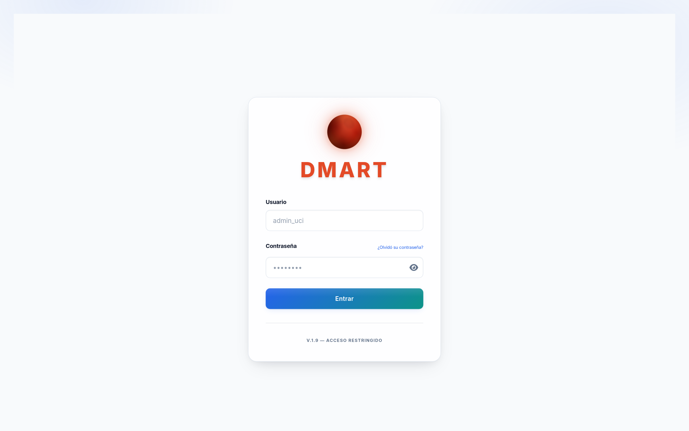
Figura 1. Pantalla de acceso (login) con diseño responsivo, selector de tema e idioma y aviso de acceso restringido. Combina usuario, contraseña y, si está habilitado, segundo factor TOTP.
El dashboard consolida los KPIs de la unidad: censo activo, ocupación de camas, pacientes por estado de gravedad y tarjetas por cama con su último EWS. Se alimenta de /api/stats y del streaming SSE, de modo que una nueva medición actualiza las tarjetas sin recargar la página.
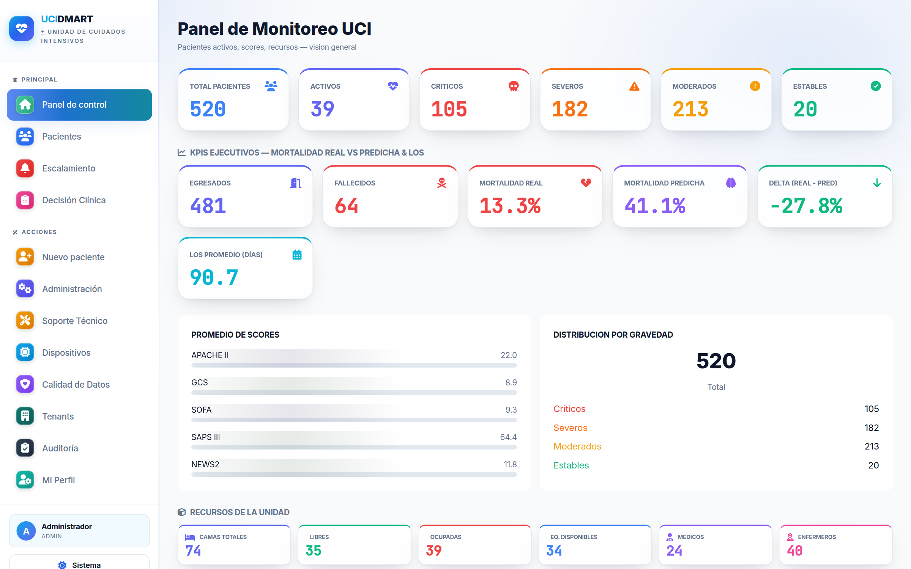
Figura 2. Panel de control: KPIs de la unidad, censo de camas, ocupación y tarjetas de pacientes activos con último EWS (APACHE II, NEWS2, SOFA, SAPS III) en tiempo real.
Listado paginado del catálogo clínico con la búsqueda difusa (trigramas ciegos + Jaro-Winkler), filtros por estado y gravedad, y columnas de últimos scores. Cada fila permite abrir el expediente, medir o ver la timeline.
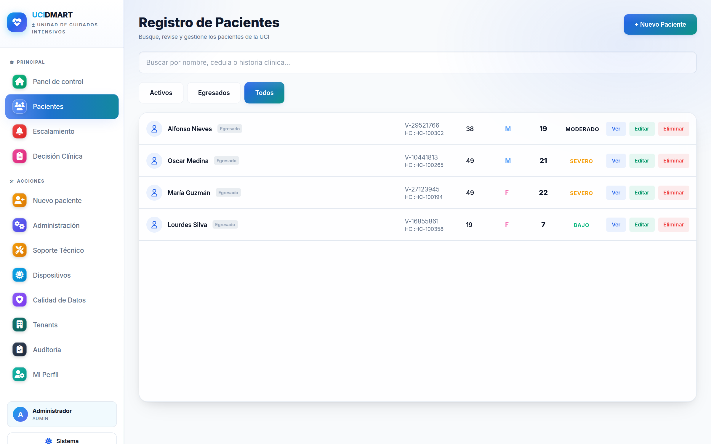
Figura 3. Censo de pacientes con búsqueda difusa (trigramas ciegos + Jaro-Winkler), filtros por estado/gravedad y paginación sobre el catálogo clínico.
Formulario de ingreso a UCI. La cédula y el número de historia se cifran en reposo y se indexan ciegos para permitir búsqueda rápida sin exponer PHI en disco.
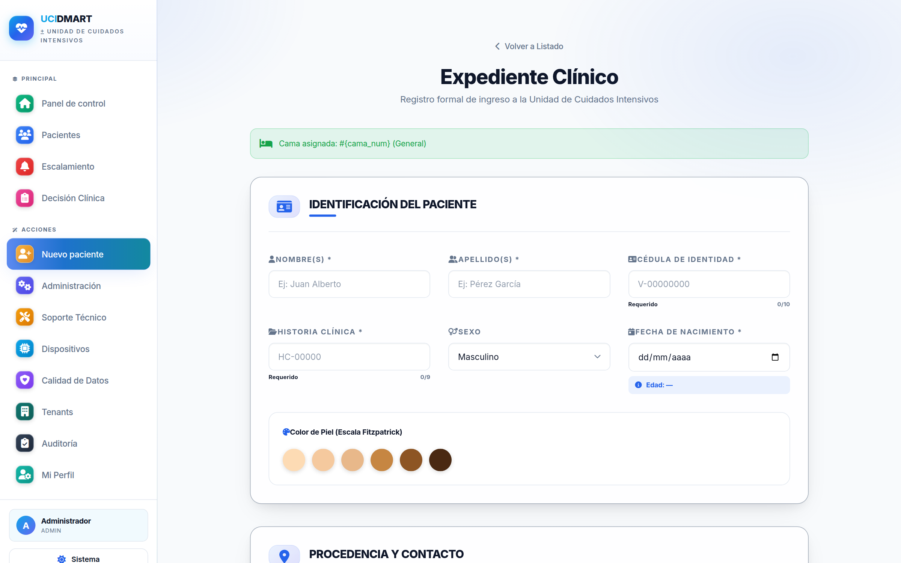
Figura 4. Registro de nuevo paciente (ingreso a UCI): datos demográficos, cédula y n.º de historia clínica cifrados en reposo con envelope AES-256-GCM.
Vista de detalle: últimas mediciones, gráficos de tendencia, escalas calculadas, riesgos de mortalidad y estancia (ML), y acciones clínicas accesibles según rol.
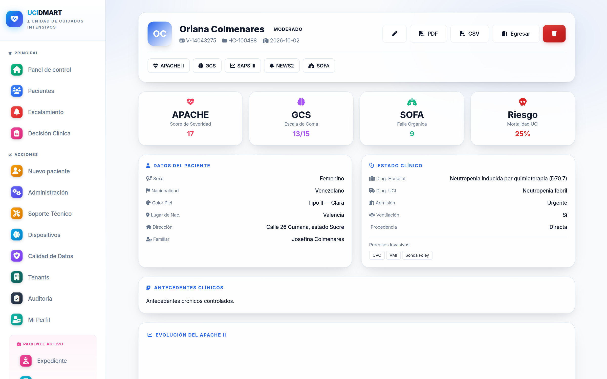
Figura 5. Expediente del paciente: últimas mediciones, escalas clínicas, riesgos de mortalidad y estancia (ML) y acciones clínicas (medir, editar, egreso).
Actualización de datos demográficos y diagnóstico con validación de campos; cualquier cambio queda registrado en la auditoría WORM. Los permisos de edición se verifican en servidor.
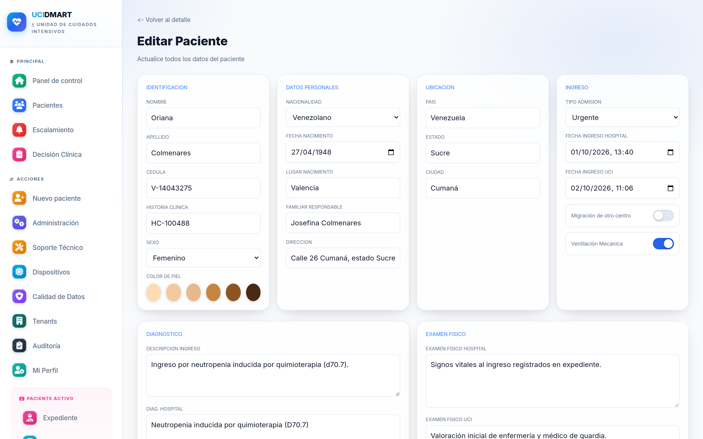
Figura 6. Edición del expediente con validación de campos (edad, sexo, diagnóstico) y guardado auditado en el registro WORM.
Pantalla de captura de constantes: al guardar, el backend calcula las cinco escalas y publica el evento SSE. La validación clínica de plausibilidad se aplica antes de persistir.
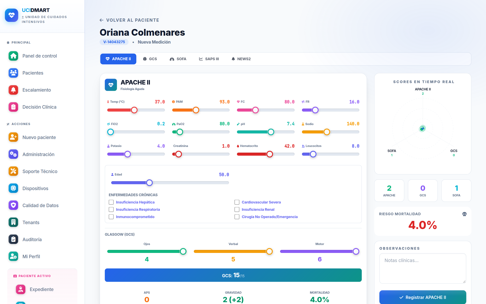
Figura 7. Registro de medición y cálculo en vivo de las cinco escalas (APACHE II, GCS, NEWS2, SOFA, SAPS III) sobre las constantes introducidas.
Línea de tiempo append-only del paciente con fingerprint por evento: mediciones, planes CDS y eventos administrativos quedan encadenados y verificables.
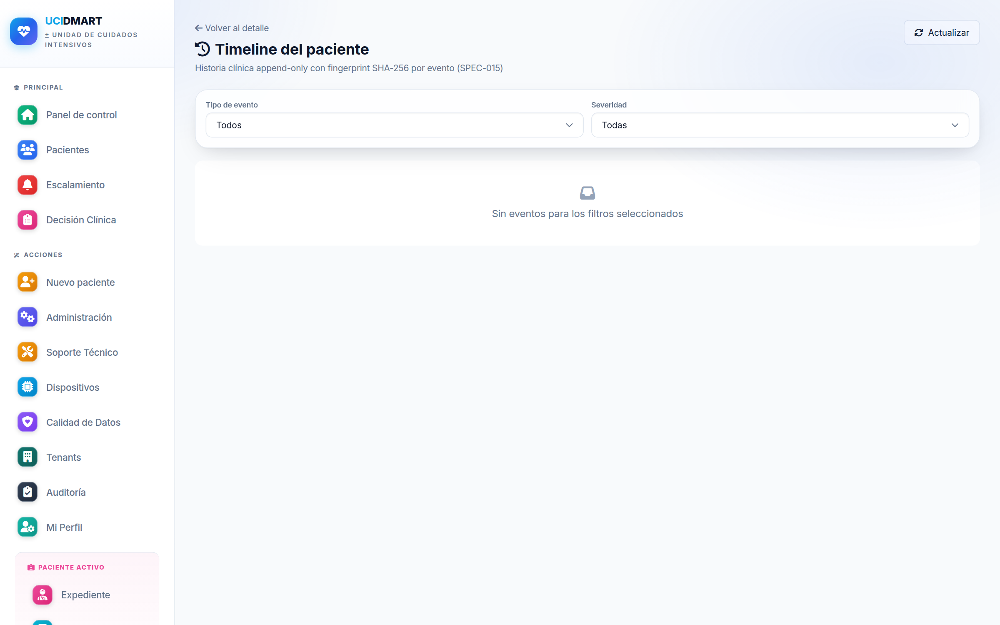
Figura 8. Timeline clínico append-only con huella criptográfica (fingerprint) por evento; cada evento está encadenado y es verificable.
Motor CDS (SPEC-016): planes de cuidado disparados por reglas (motor CEL) según perfil de gravedad y contexto, con recomendaciones accionables y registro de la activación.
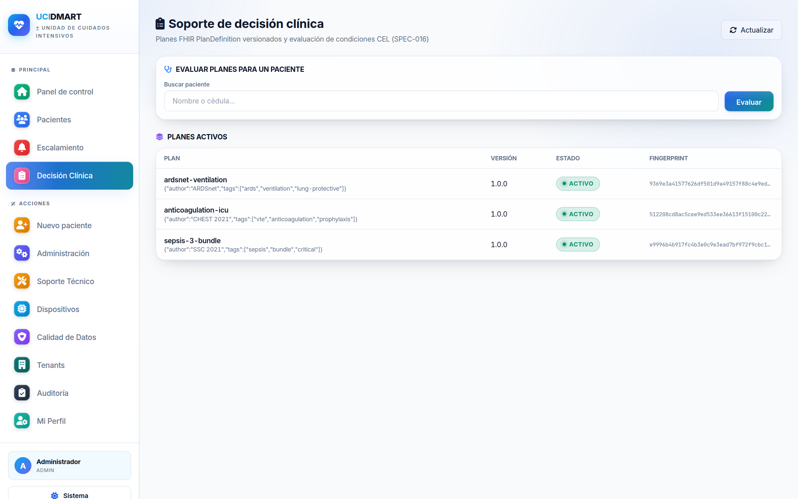
Figura 9. Motor de decisión clínica (CDS): planes de cuidado basados en reglas (motor CEL) y recomendaciones accionables por perfil de gravedad.
Centro de alertas y escalamiento: umbrales EWS vencidos, severidad por cama y acción inmediata. Las alertas pueden enviarse por Web Push (VAPID) a los profesionales suscritos.
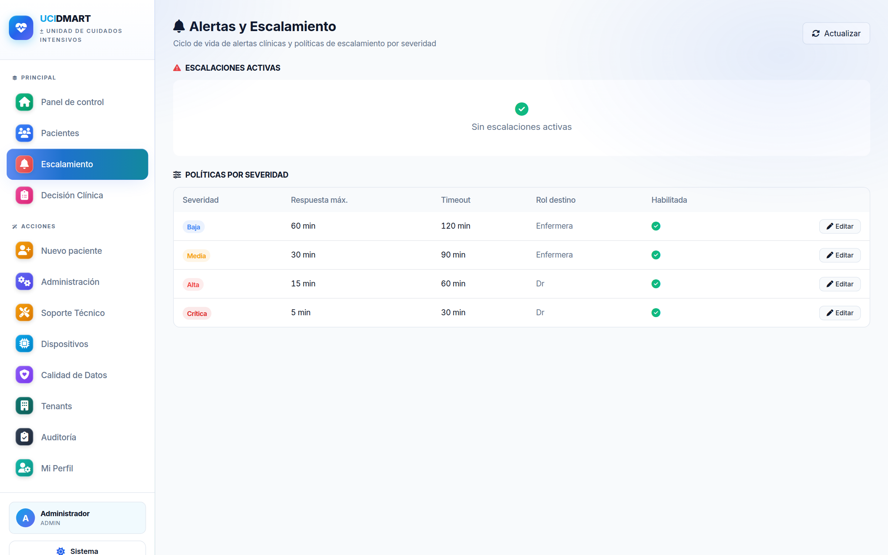
Figura 10. Centro de escalamiento: alertas clínicas por umbrales EWS, estados de severidad y acción inmediata desde la misma pantalla.
Registro de dispositivos de cama: identificación, tenant, cama asignada, estado de sincronización y último latido. Los monitores se asocian a los drivers MLLP por MSH.3.
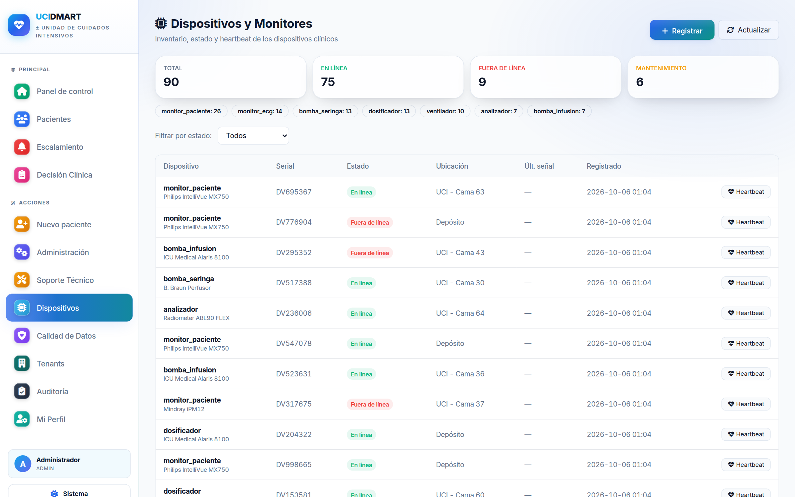
Figura 11. Registro de dispositivos/monitores de cama (drivers HL7 v2 por MSH.3), estado de sincronización e identificación por cama-tenant.
Consola de completitud, plausibilidad, integridad referencial y consistencia de scores sobre el dataset; detección de mediciones fuera de rango y acciones de corrección.
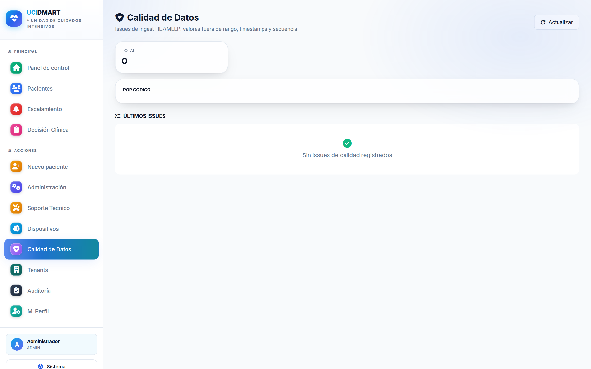
Figura 12. Consola de calidad de datos: completitud, plausibilidad clínica, integridad referencial y validación por escala sobre el dataset.
Gestión de usuarios y roles (RBAC), camas y equipos médicos, con toggles de acceso y panel de operación de la unidad.
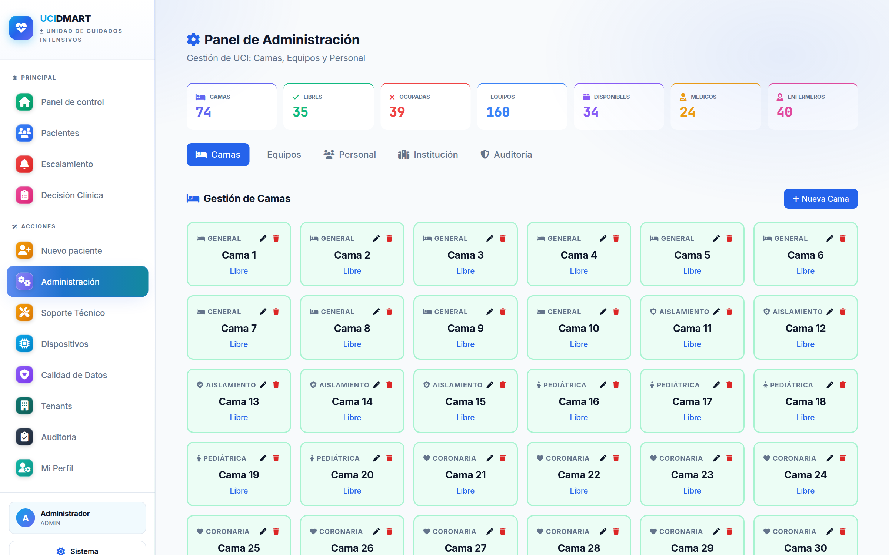
Figura 13. Panel de administración: gestión de usuarios y roles (RBAC), camas, equipos médicos y operación de la unidad.
Telemetría por subsistema (db, ingest, realtime, ml, monitores, audit, backup), acciones idempotentes (reintento de ingesta, reset de circuit breaker, backup, rotación de modelo, verify de fingerprints) y self-healing automático.
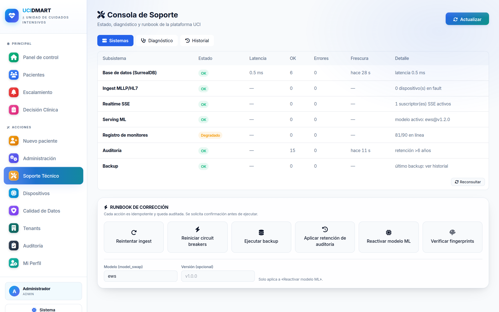
Figura 14. Consola técnica de soporte (SPEC-044): telemetría por subsistema, acciones idempotentes (reintento de ingesta, reset de circuit breaker, backup, rotación de modelo) y self-healing.
Organizaciones aisladas: cada tenant filtra sus pacientes, mediciones y alertas; la impersonación acotada permite al soporte operar dentro de permisos.
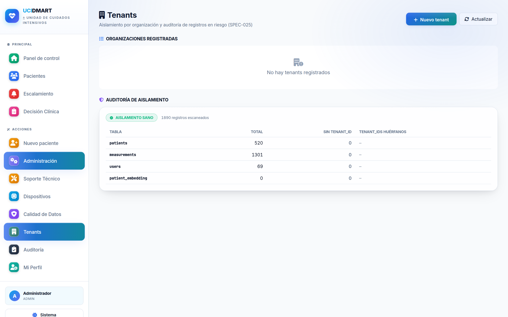
Figura 15. Gestión de multi-tenancy: organizaciones aisladas con filtrado por tenant en cada consulta y soporte de impersonación acotada.
Visor de la cadena WORM: eventos encadenados por prev_hash, lotes firmados y export verificable de integridad. Base de libertad ante auditorías externas e investigaciones.
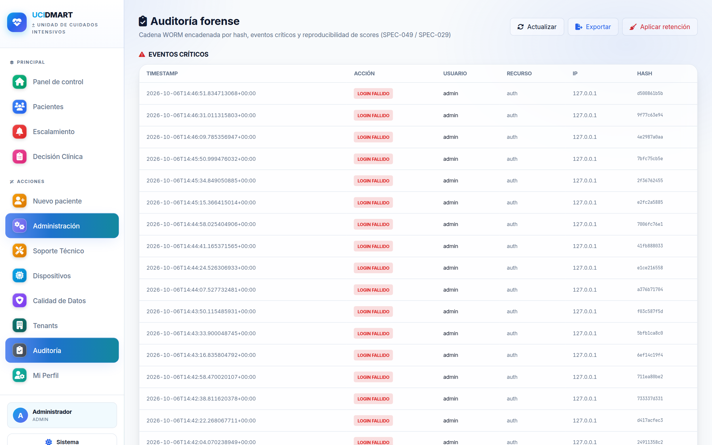
Figura 16. Visor forense de auditoría WORM: cadena SHA-256 encadenada, lotes firmados HMAC y export verificable de integridad.
Cambio de contraseña, alta/baja de MFA TOTP con códigos de respaldo y datos de la cuenta; los cambios sensibles quedan auditados.
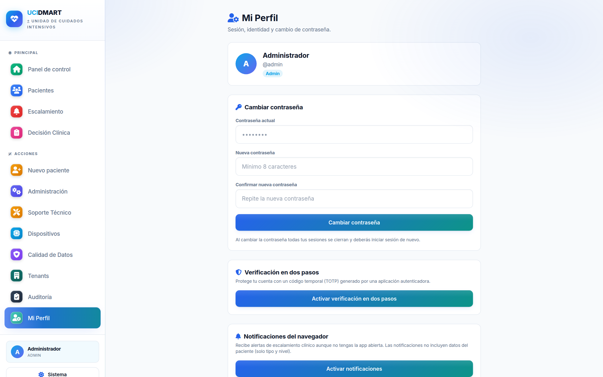
Figura 17. Perfil de usuario: cambio de contraseña, alta/baja de MFA TOTP con códigos de respaldo y datos de cuenta (opcionalmente PHI protegida).
El servidor expone el estado operativo en formato JSON: base de datos conectada, caché (opcional), uptime y versión del binario. Lo consumen los probes de Kubernetes, el proxy y las alertas.
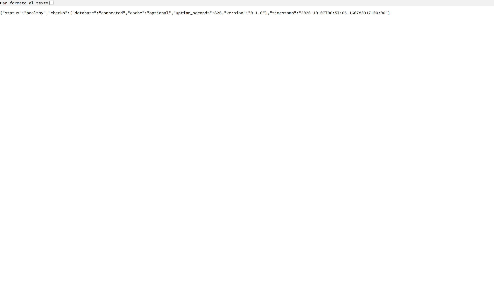
Figura 18. Endpoint de salud /obs/health: estado de base de datos, caché, uptime y versión del binario. Complementado por /obs/live y /obs/ready.
El endpoint de métricas alimenta Grafana: latencias y contadores HTTP, métricas de ML, de ingesta y de soporte, en formato Prometheus consumible directamente por los scrapers.
Figura 19. Endpoint /metrics en formato Prometheus: latencias HTTP, contadores de la API, métricas de ML e ingesta para el panel Grafana.
La API se documenta sola (utoipa): la especificación JSON describe todos los endpoints con sus esquemas, agrupados en ya conocidos tags funcionais (auth, patients, ingestion, ML, support, sandbox, export, ...).
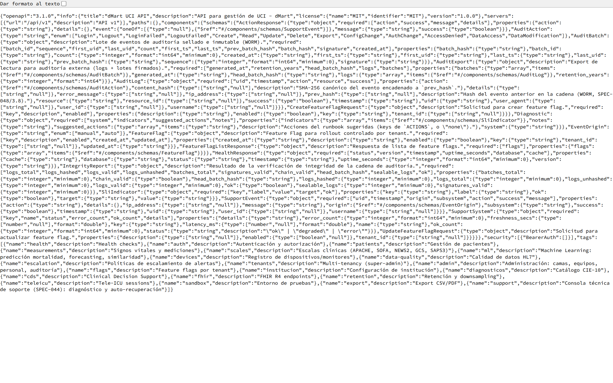
Figura 20. Especificación OpenAPI 3 (JSON de /api/v1/openapi.json) generada por utoipa: 5 grupos funcionales y contratos documentados de todos los endpoints.
La calidad se demuestra en cuatro niveles: unitario, integración/E2E, carga y fuzzing. Todos se ejecutan como parte del pipeline CI y en local de forma acotada.
| Nivel | Descripción | Números |
|---|---|---|
| Unitario (lib) | Tests de módulos: escalas y vectores de referencia, parser HL7, cifrado, auditoría, rate limiting, ML. | 82 tests |
| Integración HTTP | E2E in-process con tower::oneshot sobre el router Axum: auth/RBAC, pacientes, mediciones, HL7, FHIR, tenants, WORM. | 128+ tests (SPEC-004, api_tests, hl7_integration) |
| End-to-end UI (Playwright) | Flujos reales de navegador: login, pacientes, mediciones, admin. | 20 tests, 0 errores |
| Carga (k6) | Scripts de autenticación, escalas, FHIR, HL7 y métricas. | 5 escenarios |
| Fuzzing (cargo-fuzz) | Cobertura de entradas adversariales en JSON de API, parser HL7 y escalas. | 3 targets |
| Benchmark (criterion) | Rendimiento de cálculo de escalas. | scale_bench |
# Relevant tests del backend (rápido) cargo test -p dmart-server --test api_tests --test hl7_integration cargo test -p dmart-server --lib # Coverage gate (>= 60 % global + por módulos) cargo llvm-cov -p dmart-server --lib --test api_tests # E2E UI npm run test:e2e # Playwright contra el servidor levantado # Carga k6 run tests/load/auth.js tests/load/scales.js
cargo test --workspace en local porque compila el frontend WASM y el fuzzing (horas); el backend se valida con los targets acotados anteriores (~15 s) y el resto lo resuelve el CI.SPEC-027 define el gate: cobertura global >= 60 % medida con llvm-cov, verificada por check-coverage-thresholds.sh con umbrales por módulos. El pipeline falla (rojo) si no se alcanza, impidiendo que código sin probar llegue a producción. El badge del repositorio refleja el último estado del gate.
El servidor expone, sobre el mismo puerto, tres contratos de operación:
| Endpoint | Contenido |
|---|---|
| /obs/health, /obs/live, /obs/ready | Liveness/readiness: estado de DB, caché (opcional), uptime y versión. Usado por los probes de Kubernetes y por el proxy. |
| /metrics | Prometheus: latencias y contadores HTTP, métricas de ML (ml_inference_*), de ingesta, de soporte (support_actions_total, self_healing_total) y de proceso. |
| /api/v1/openapi.json | Contrato OpenAPI 3 de la API para generación de clientes y verificación. |
La observabilidad se completa con Grafana (dashboards por dominio), Prometheus y Alertmanager con reglas por directorio de despliegue, métricas de proceso y alertas regionalizadas.
| SLO | Objetivo mensual |
|---|---|
| Disponibilidad de la API | 99,9 % (error budget ~43 min/mes) |
| Latencia p95 de endpoints clínicos | < 300 ms internos (sin red) |
| Entrega SSE de eventos | Pérdida de eventos < 0,1 % de los emitidos |
| Ingesta HL7 sin pérdida | 100 % de mensajes válidos persistidos |
Los SLOs alimentan los error budgets mostrados en el panel de escalation; si el budget se agota entran en acción las alertas de escalamiento operativo.
dmart-server y comprobar los logs (DB conectada, listeners, servidor en :3000).backup.sh, dr_backup.sh, dr_restore.sh, dr_verify.sh y simulacros dr_drill.sh (restore probado).El pipeline produce una imagen de contenedor multi-stage: etapa de compilación Rust (host), build del frontend WASM (Trunk) y etapa final slim con el único binario y el dist/ incrustado. La imagen se firma con cosign keyless y se escanea con cargo deny/cargo audit en CI.
| Recurso | Función |
|---|---|
| Deployment dmart-server | Replicas del API+frontend con HPA, probes de liveness/readiness, PDB e Ingress TLS. |
| StatefulSet SurrealDB | Con o sin cluster de 3 nodos (SPEC-023) y volumen persistente. |
| NetworkPolicy / ServiceAccount | Segregación de red y mínimo privilegio. |
| Secrets | JWT_SECRET, DMART_MASTER_KEY, claves VAPID y CA de monitores como secretos del cluster. |
El repositorio incluye manifiestos ArgoCD (AppProject + Application) y Flux (GitRepository + HelmRelease + Kustomization). El flujo es: cambio en el repo -> CI verde -> imagen firmada -> GitOps sincroniza el cluster. Los scripts deploy_blue_green.sh, deploy_canary.sh y deploy_rollback.sh implementan estrategias de liberación con verdes/azules y canario con regresión rápida.
Se mantienen tres perfiles de configuración (dev, staging, prod) con variables separadas. En prod: CORS cerrado, cookies seguras, HSTS, MFA obligatorio, rate limit distribuido (Valkey) e ingesta MLLP con mTLS y fail-closed. En desarrollo se usan desactivaciones explícitas (rate limit, throttles) marcadas como tales.
| Pilar | Implementado | Pendiente / plan |
|---|---|---|
| AuthN | Argon2id, JWT HS256 revocable (access 15 min / refresh 7 días), MFA TOTP RFC 6238, JWT_SECRET en Zeroizing. | Thelogy operativa de adopción de MFA en todos los usuarios. |
| AuthZ | RBAC Admin/Médico/Enfermero/Viewer/Soporte; ResourceOwner y verificación de tenant en cada acceso. | Auditoría periódica de asignación de roles. |
| Cifrado en reposo | AES-256-GCM envelope DMART_A2 + auto-detección DMART_V1 legacy; subclaves HMAC-SHA256 (PHI/INDEX); índices ciegos. | Backfill completo de filas legacy (P0.2). |
| Búsqueda de PHI | Trigramas ciegos HMAC + ranking Jaro-Winkler en Rust, sin texto en disco. | Ampliar cobertura a otros campos PHI. |
| MLLP | mTLS TLS 1.3, pinning SHA-256 DER a MSH.3, allowlist de emisores, fail-closed. | Monitorización de revocaciones por CA. |
| Rate limit | Trait RateLimitStore, Valkey/Redis INCR+EXPIRE, tenant isolation por claim JWT, headers X-RateLimit-*. | WAF perimetral en el gateway. |
| Supply chain | cargo deny + cargo audit, cosign keyless, gitleaks SARIF. | Rotación de PAT de GitHub. |
| Auditoría | Cadena WORM SHA-256, lotes HMAC, mutex async, export verificable. | Notarización temporal externa (timestamping). |
| Riesgo | Exposición | Mitigación / recomendación |
|---|---|---|
| AES-NI sin módulo FIPS | El crate aes-gcm no tiene módulo validado FIPS 140-3. | Si el requisito es FIPS, sustituir el proveedor (ej. openssl/rustls-fips). |
| Refresh token en cookie | Robo de cookie (malware de terminal). | SameSite=Strict, httpOnly, HTTPS obligatorio, rotación en cada uso. |
| Ingesta HL7 maliciosa | Valores extremos o mensajes infinitos. | Validación de plausibilidad, idempotencia, rate limit, timeouts, tope de conexiones, circuit breaker. |
| XSS en interfaz | Datos de pacientes renderizados. | Leptos escapa por defecto el contenido; CSP activa; sin innerHTML dinámico con PHI. |
| Dependencias | CVEs en crates. | cargo audit en CI, pinning y policy scan con cargo deny. |
| Operador humano | Errores de configuración (secretos débiles). | validate_secret_strength fail-closed + runbooks de arranque. |
| Requisito HIPAA | Evidencia en dMart UCI |
|---|---|
| Confidencialidad / cifrado | PHI en reposo AES-256-GCM (envelope DMART_A2), tránsito TLS, mTLS en MLLP. |
| Integridad | Cadenas WORM, fingerprint de timeline, firmas HMAC de lotes, validación de plausibilidad. |
| Disponibilidad | DR con scripts de backup/restore probados, cluster SnDD, SLOs con error budget. |
| Auditoría de accesos | Registro WORM encadenado de eventos sensibles y export verifiable. |
| Último uso / notificación | Tracker de accesos en auditoría y consola de soporte. |
El evidence pack (docs/compliance/) cataloga controles aplicables: A.5 (políticas), A.8 (gestión de activos y PHI), A.9 (control de acceso: RBAC, mínimo privilegio), A.10 (criptografía), A.12 (operaciones: backup, logs, vuln management) y A.14 (desarrollo seguro: SDD, CI, revisión). Los scripts compliance_generate.sh/compliance_check.sh generan y verifican el pack como parte de CI.
| Métrica | Valor |
|---|---|
| Especificaciones SDD completadas | 46 specs (SPEC-001 a SPEC-052, 4 fases) |
| Pruebas backend (gate) | 210 (82 unitarias + 128 de integración) |
| Tests E2E UI (Playwright) | 20, 0 errores |
| Gate de cobertura | >= 60 % global con umbrales por módulo |
| Fuzz targets | 3 (API JSON, parser HL7, escalas) |
| Rutas de la SPA | 17 protegidas + salud/métricas/OpenAPI |
| Escalas de gravedad | 5 (APACHE II, GCS, NEWS2, SOFA, SAPS III) |
| Modelos ML | Ensemble de mortalidad, red LOS, similitud, forecaster |
| Migraciones de esquema | 27 versionadas (SurrealQL) |
| Tamaño del binario (debug) | ~760 MB; release con LTO/opt-z minimizado |
| Módulo WASM del frontend | ~3,2 MB compilado con Trunk |
Este manual se generó desde el código real y las especificaciones del repositorio, con capturas del sistema en ejecución sobre un dataset de demostración. La documentación técnica fiel al código es el primer requisito de la metodología SDD: especificación, implementación, prueba y evidencia van siempre juntas.